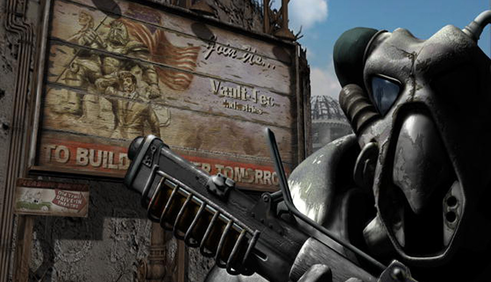

Retrospectiva săptămânii 30 septembrie - 6 octombrie 2018
Retrospectiva săptămânii este rubrica duminicală în care trecem în revistă evenimentele săptămânii de pe frontul de gaming: știri şi articole (scrise de alții, bineînțeles, că e mai ușor aşa), industrie, lansări, oferte de jocuri, toate numai de savurat la cafeaua de duminică dimineața. (Și la care oricine poate contribui. 1 )
Ştiri
Telltale Games se închide
- Alte concedieri la Telltale: compania renunţă la o parte din ultimii angajați pe care-i păstrase după valul masiv de concedieri de acum două săptămâni. (GamesIndustry.biz, Gamasutra, Engadget)
- Totodată, compania caută să încheie un acord cu o companie externă pentru a angaja o parte dintre foștii dezvoltatori de la Telltale și să termine ultimul sezon din The Walking Dead. (Kotaku)
- The Verge publică o cronică a sfârșitului companiei, povestită chiar de oamenii care și-au pierdut slujbele. (The Verge)
- Alte reacții: Opinion: Will Telltale’s fate be a catalyst for industry reform? (Gamasutra)
Alte știri
- Andrzej Sapkowski, autorul romanelor Witcher, e nemulţumit de contractul pe care l-a încheiat pentru jocurile video şi încearcă să obţină mai mulţi bani (mai precis 16,1 milioane de dolari) de la CD Projekt Red, care însă l-au refuzat. (Eurogamer, GamesIndustry.biz, Gamasutra)
- Mike Morhaime se retrage din poziţia de preşedinte al Blizzard Entertainment. Morhaime a fost unul dintre co-fondatorii companiei în 1991 şi i-a fost preşedinte în ultimii 14 ani. (Eurogamer, GamesIndustry.biz)
- Dezvoltatorul jocului Limit Theory anunţă că opreşte lucrul la joc, la 6 ani după ce a strâns fonduri prin Kickstarter, timp în care nu a reuşit să-l finalizeze. (Kickstarter, PC Gamer, Eurogamer)
- Google a dezvăluit că lucrează la Project Stream, o tehnologie ce va permite streamingul de jocuri video în browser, începând cu Assassin’s Creed Odyssey. (Blog Google, Ars Technica, Eurogamer, Games Informer)
- Nintendo scoate o versiune nouă de Switch în 2019, dar nu se cunosc momentan alte detalii (The Wall Street Journal, Ars Technica, GamesIndustry.biz). Totodată, a depus și o cerere pentru a obține un brevet pentru o carcasă de telefon mobil care să transforme dispozitivul într-un Game Boy, cu tot cu butoane. (Engadget, Games Informer)
- Bluehole, producătorii lui Playerunknown’s Battlegrounds, au „banat” peste 13 milioane de conturi începând din iunie anul trecut. (Eurogamer)
- După ce a introdus verificări după numele real pentru a cunoaște vârsta jucătorilor, compania chineză Tencent testează acum un sistem de recunoaștere facială pentru a limita timpul petrecut în joc de jucătorii lui Honor of Kings. (SCMP, BBC)
- Randy Pitchford, CEO-ul Gearbox, a fost fraudat cu aproape 3 milioane de dolari de asistentul său personal. (USgamer)
- Capcom anunță un film Mega Man. (Site Capcom, Eurogamer, Games Informer)
- Primele secvențe din MMO-ul produs de Amazon, New World, s-au „scurs” pe internet. Interesant e că prima dată au apărut pe… PornHub. (Eurogamer, PC Gamer)
Articole (critică, dev, design)
- On Ambition and Labour in Games (Historian On)
- Video games and the change of autumn (Eurogamer)
- Visit Tokyo's Best Arcades (Kotaku)
Not-a-review
- (Mad Max) Man and Machine (SlowRun)
- (My Brother Rabbit) My Brother Rabbit Tackles Seriousness with Surrealism (Unwinnable)
- (Overcooked) Couples Fighting (Unwinnable)
- (Assassin’s Creed Odyssey) Why I Like Being Hunted by Mercenaries in the Latest Assassin's Creed (Waypoint)
- (Spider-Man) Spider-Man: The mediocre and the magnificent (I Need Diverse Games)
Vocea industriei
- Serge Hascoet, Ubisoft: Ubisoft's Creative Head Talks The Future Of Assassin's Creed And Splinter Cell (Games Informer)
- Siobhan Reddy, Media Molecule: "We aren’t curing cancer. There’s a human cost to making games" (GamesIndustry.biz)
- John Warner, Over the Moon Games (The Fall): It’s time we stopped encouraging indies și răspunsurile pe care le primește de la alți dezvoltatori indie (GamesIndustry.biz)
Istorie
- Assassin’s Creed: An oral history (Polygon)
- Beneath a Starless Sky: Pillars of Eternity and the Infinity Engine Era of RPGs (Shacknews)
- How BioWare revolutionised the RPG (Eurogamer)
- Patented Heroes (The History of How We Play)
- History of Metal Gear: Kojima’s Farewell (Ground Zeroes & Phantom Pain) (VGChartz)
- (Video) Clipul e vechi de un an, dar cum Fallout 2 tocmai a împlinit 20 de ani, merită vizionat: Remembering Fallout 2 as it turns 20 (Eurogamer)
- (Video) Un documentar despre istoria Larian: Divinity: Original Sin Documentary | Gameumentary (YouTube)
- (Video) War Stories: Serious Sam almost didn’t happen—until crates saved the day (Ars Technica)
- (Video) 10 Years of GOG.com
Dev, making of
- Die, die, die: Boss battle design in Death’s Gambit (Gamasutra)
- How Metro Exodus uses Nvidia ray tracing to stunning effect (Eurogamer)
- Spooky Doorway’s revisiting Darkside Detective Season One design choices in light of nearly fully funded Season Two on Kickstarter (Gamasutra)
Design, world-building
Made în România
În perioada 4-5 octombrie s-a desfășurat Dev.Play 2018 conferința anuală organizată de RGDA dedicată industriei jocurilor video:
- Printre vorbitori s-au numărat invitați de la Blizzard, EA, Valve, precum și Rami Ismail (Vlambeer).
- Secțiunea Indie Expo a expus creațiile, în lucru sau deja lansate, ale producătorilor români, printre care și Interrogation (studioul Critique Gaming), care a câștigat premiul pentru cel mai bun joc al expoziției - aveți aici lista jocurilor câștigătoare la diferitele categorii
- S-a desfășurat o etapă din cadrul Nordic Game Discovery Contest, care a fost câștigată de Bossgard (Sand Sailor Studios)
- La conferință a fost prezent și Ministrul Comunicațiilor, care a anunțat un program de finanțare de 94 milioane de euro pentru IMM-uri din IT. GameIndustry.biz discută cu Cătălin Butnariu, președintele RGDA, despre cum acest program va ajuta industria de gaming din România.
Anunţuri şi lansări de jocuri
Anunţate
- Minecraft: Dungeons (Eurogamer, USgamer)
- Cattle Call: Hollywood Talent Manager (PCGamesN)
- X4: Foundations, un nou titlu din seria de space-sims X (RPS, PC Gamer)
- Project Gustav (nume temporar), un nou RPG de la Larian (Destructoid)
- Weedcraft Inc, un tycoon în care trebuie să dezvolți o afacere cu … știți voi (Destructoid)
- Baldur’s Gate 3 - nu a fost anunțat oficial, ci doar confirmat indirect de Brian Fargo (PC Gamer, USgamer, PCGamesN)
Acum cu dată de lansare
- The Missing: 10 octombrie (ResetEra)
- The Quiet Man, hibridul CG-FMV de la Square Enix, apare pe 1 noiembrie (Variety, RPS)
Amânate
- Kursk: 7 noiembrie, în loc de 11 octombrie (PC Gamer)
- The Occupation: 5 februarie 2019 în loc de 9 octombrie 2018 (RPS)
Lansate
- 2 octombrie: Forza Horizon 4 (Microsoft Store)
- 2 octombrie: Mega Man 11 (Steam)
- 3 octombrie: Vigilantes (Steam)
- 4 octombrie: Achtung! Cthulhu Tactics (Steam)
- 4 octombrie: American Truck Simulator - Oregon (expansion) (Steam)
- 5 octombrie: Assassin’s Creed Odyssey (Steam, Ubi Store)
- Indiana Jones and the Infernal Machine și seria Soldier of Fortune au fost relansate pe gog.com.
Oferte jocuri
Humble Bundle
- Humble Monthly-ul care se va debloca la începutul lunii noiembrie are 3 early unlocks: Hitman Season One, Hollow Knight, 7 Days to Die.
Humble Overwhelmingly Positive 2:
- Pragul de 1$: Wuppo, SIMULACRA, Subsurface Circular
- Pragul „beat the average”: Nuclear Throne, Momodora: Reverie Under The Moonlight, LISA, SOMA
- Pragul de 15$: Opus Magnum
Female Protagonist Sale: SteamWorld Dig 2 (13,99€), Bayonetta (6,79€), SteamWorld Heist (4,94€), Fran Bow (4,04€), Life Is Strange: Before The Storm (8,49€), Nelly Cootalot: The Fowl Fleet (9,99€)
Promoții Paradox (Steel Division: Normandy 44 e 13,59€), Daedalic, Square Enix
Steam
- Stardock sale și Total War: Warhammer sale
- Alte reduceri: Little Nightmares (5,99€) , Gorogoa (8,24€) , Gremlins, Inc. (3,74€) , Oxenfree (4,99€) , Salt and Sanctuary (12,05€) , Hard Reset Redux (1,99€) , Hard West (3,74€) , The Night of the Rabbit (4,79€) , Pathologic Classic HD (1,29€) , Breach & Clear (1,49€) , Edna & Harvey: The Breakout (1,49€) , Diluvion: Resubmerged (4,99€) , Hero-U: Rogue to Redemption (19,49€) , Caravan (1,99€) , Ghost 1.0 (5,19€) , Minit (7,49€) , Worms Reloaded (4,99€) , Dead Synchronicity: Tomorrow Comes Today (2,49€) , Knights of Honor (2,49€) , Botanicula (3,99€) , Beat The Game (4,99€) , Unity of Command Bundle (6,99€), Where the Water Tastes Like Wine (14,99€) , Quarantine Circular (4,79€) , Echo of the Wilds (4,94€) , Crush Your Enemies (0,99€)
gog.com
Multe reduceri cu ocazia aniversării de 10 ani a gog.com:
- Câteva recomandări: Vampire: The Masquerade - Redemption (1,29€) , Vampire: The Masquerade - Bloodlines (4,39€) , Return to Castle Wolfenstein (1,29€) , The Temple of Elemental Evil (2,09€) , Planescape: Torment: Enhanced Edition (4,39€) , Fallout 2 (2,19€) , Fallout Tactics (2,19€) , Icewind Dale: Enhanced Edition (4,39€), Firewatch (4,39€) , Stardew Valley (10,39€) , DOOM (1,79€) , DOOM II (2,99€) , Quake (2,99€) , Quake II (2,99€) și multe altele
- Colecții de jocuri la prețuri reduse:
- The Timeless Essentials: Theme Hospital, Dungeon Keeper 2, Another World, System Shock 2: 4,39€
- The Art of Aging Gracefully: Dragon Age: Origins, Owlboy, Homeworld: 8,69€
- The Modern Classics: Kingdom Come: Deliverance + Battle Chasers: Nightwar + Shadows Tactics: Blades of the Shogun: 21,59€
Altele
- Groupees: Build your own bundle cu jocuri de pe itch.io la alegere dintr-un set de 12 (minim 3 jocuri, respectiv 0,99$) - Age of Conquest 3, Scrap Garden și altele
- Green Man Gaming: No Man’s Sky (aprox. 18€), Empyrion - Galactic Survival (aprox. 6,8€), Californium (aprox. 2€)
- Indie Gala: Little Nightmares (aprox. 4,7€)
Recomandarea săptămânii: Fallout 2

Pe 30 septembrie 1998 se lansa Fallout 2, proaspăt ieșit din mâinile celor de la Black Isle Studios. Jocul a făcut istorie, inclusiv prin părțile noastre, și e inclus constant în orice top cu cele mai bune jocuri din toate timpurile. Deja nu mai are nevoie de nicio prezentare, s-a scris cam tot ce se putea scrie despre el până în momentul ăsta.
Cum săptămâna aceasta s-au împlinit 20 de ani de Fallout 2 (Chris Avellone i-a urat deja „la mulți ani”), vă propunem să-l mai luați la o tură de joc, chiar dacă probabil l-ați jucat și răsjucat de mai multe ori.
Dacă vreți să intrați mai bine în atmosferă, puteți începe prin a viziona documentarul publicat anul trecut de Eurogamer, în care Feargus Urquhart, Leonard Boyarsky și Tim Cain vorbesc despre Black Isle și primele 2 jocuri Fallout, sau să citiți capitolul 6 din uriașul articol de pe ShackNews, care prezintă istoria jocurilor Fallout 1 și 2 povestită chiar de oamenii care au lucrat la ele și o așează în contextul mai larg al RPG-urilor Interplay/Black Isle.
(Dacă nu-l aveți deja - mai e cineva? - cumpărați-l de pe gog.com. E DRM-free, cum ar trebui să fie, și e și ieftin.)
Alternativă: dacă totuși l-ați jucat de prea multe ori, sau l-ați rejucat recent, puteți încerca spin-off-ul Fallout Tactics. Trecut în general cu vederea pentru că n-ar fi un membru adevărat al seriei, jocul este totuși unul foarte bun. Chiar dacă pune mai puțin accent pe partea de role-playing și open-world, jocul păstrează aceeași atmosferă și e un joc de tactică cât se poate de solid. Cumpărați-l tot de pe gog.com.
- Dacă ai citit vreun articol sau vreo știre interesantă și crezi că merită inclusă în retrospectiva săptămânii, te așteptăm cu recomandarea ta pe forum, pe unul din topicurile dedicate: Știri, Articole, Gaming România, Oferte jocuri [return]